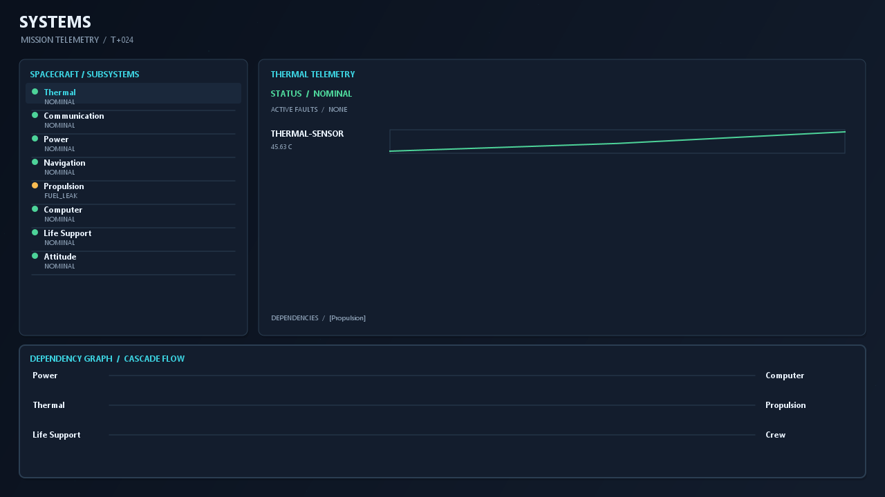
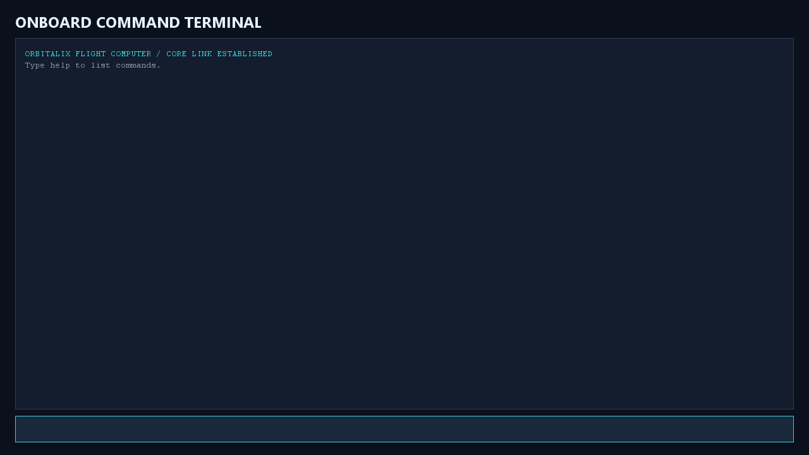
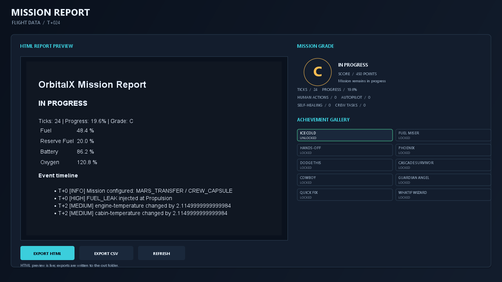
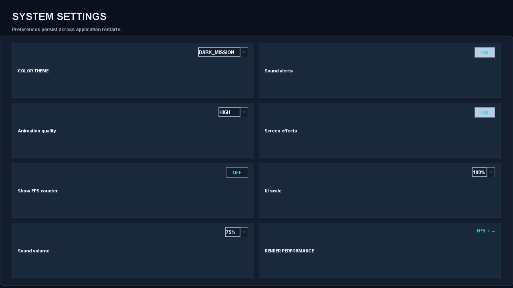

A plain-language guide to what the project does, how to start it, how to fly a mission, and what every screen and command is for.
You do not need to know Java or spacecraft engineering to use this guide.
OrbitalX is a learning simulator: it creates a pretend spacecraft mission, shows changing instrument readings, introduces equipment problems, and lets you choose how those problems are handled.
Project: OrbitalX — a Java desktop and command-line simulator
Prepared for a first-time user. Instructions below are for Windows PowerShell unless noted.
Start here
OrbitalX is a simulation, not a real spacecraft connection. Everything it changes—fuel, oxygen, faults, crew condition, and mission progress—is inside the program. It is safe to experiment with.
What is a mission-control simulator?
Imagine a vehicle travelling toward a destination. It has engines, power, temperature control, communications, navigation, life support, a computer, supplies, and crew. The program advances the mission in small steps called ticks. On each tick, the simulated spacecraft consumes resources, instruments report values, the software looks for trouble, and recommendations may appear.
A tick is a simulation step—not necessarily one real second. The GUI controls how quickly those steps run on your computer.
Words you will see
Word
Simple meaning
Telemetry
Measurements sent by the spacecraft: fuel, temperature, pressure, battery, signal, and more.
Subsystem
One part of the craft, such as Propulsion, Power, Thermal, or Life Support.
Fault
A simulated problem, such as a fuel leak or broken antenna.
Recommendation
A suggested response, which you can preview, execute, or dismiss.
Autonomy
How much authority the onboard autopilot has to take action.
Uplink delay
A simulated wait before a command from mission control reaches the craft.
Replay
A view of recorded earlier mission states; it does not rewind the live craft.
First-time recommendation: run the GUI, open Planner, select Free Flight and EASY, leave the seed at 42, then launch. Watch the Dashboard before trying a fault scenario.
The central design idea is object-oriented programming (OOP). OrbitalX represents spacecraft parts, crew, sensors, faults, commands, and views as cooperating Java objects. The final chapter maps these real classes to abstraction, encapsulation, inheritance, polymorphism, and composition.
1. Install, build, and start
What you need
A Windows computer (this guide's commands use Windows).
Java Development Kit (JDK) version 17 or newer. The JDK includes both java and javac.
The OrbitalX project folder. If you cloned it, open PowerShell in that folder.
Start the graphical app
Open the OrbitalX folder in File Explorer.
Click the folder address bar, type powershell, and press Enter. PowerShell opens in the project folder.
Run the command below. The script compiles the Java source and then opens the desktop app.
.\run.bat
The first successful build prints Compiled OK. The desktop window should then appear. Keep the project files together; the scripts rely on the project folder structure.
Other useful launch commands
Command
What it does
.\compile.bat
Compile the program only; useful when checking whether Java/build setup works.
.\run.bat --cli
Start the text-based mission console in the same PowerShell window.
.\run.bat --selftest
Run the built-in regression checks. This is a test mode, not the normal app.
.\run.bat --screenshots out\screenshots
Render all ten views in four themes at two sizes (80 images) without opening the GUI window.
Important: run these commands from the OrbitalX folder. If PowerShell says the script is not found, you are probably in the wrong directory. If javac is not recognized, install a JDK (not only a Java runtime) and reopen PowerShell.
On Linux/macOS, use ./run.sh, ./run.sh --cli, and ./compile.sh.
2. Your first mission, step by step
Open Planner. It is also the first navigation item. Choose a destination, spacecraft, difficulty, and scenario.
Keep the seed. The seed is a number that makes random events repeatable. The same setup and seed are useful when comparing runs.
Choose a scenario. Free Flight is the calm introduction. Other scenarios schedule equipment problems at later ticks.
Launch. The launch button begins a short countdown. At the end, the selected settings configure and start the mission.
Watch the Dashboard. Read resource gauges, the mission progress line, and any advisor cards. Use the other views to inspect details.
Respond to recommendations. Select Preview to estimate a possible action, Execute to send it, or Dismiss if you do not want that recommendation.
Pause or continue. Use the top LAUNCH control or Space to start/pause. The exact button label changes with mission state.
Review the outcome. Reports shows a score/grade, achievements, a report preview, and HTML/CSV export buttons.
Longest trip (160 units), 5-tick uplink delay and a harsher environment.
More demanding play.
Spacecraft choices
Craft
Trade-off
Explorer
Balanced supplies and three crew.
Freighter
More fuel, less oxygen, two crew, and slower progress.
Crew Capsule
Four crew, larger oxygen supply, and stronger life support, but less fuel.
Difficulty
EASY reduces fault pressure and allows a larger response window. NORMAL is the standard setting. HARD raises pressure and shortens the time available for a response. These affect the simulation, not your computer's performance.
3. Every screen
The navigation rail contains ten views. All display the same live mission unless the Replay view has moved to an earlier recorded tick.
View
What it is for
What you can do or learn
Planner
Set up a new mission.
Choose destination, craft, difficulty, scenario, deterministic seed, and chaos setting; launch after the countdown.
Inspect the eight subsystem health indicators; drag to rotate, scroll to zoom, and toggle auto-rotation.
Orbit
See the journey.
Compare planned, actual, and predicted tracks; inspect distance/ETA and communications status; drag to pan and scroll to zoom.
Systems
Investigate an equipment subsystem.
Select an item in the subsystem list to view its health, faults, sensor readings/history, and dependency relationships.
Crew
Check crew condition and assign work.
Review health, stress, radiation dose, and task status. Assign EVA Repair, Medical Care, Manual Reboot, or Rest where available.
Replay
Study earlier snapshots.
Scrub the timeline, use Step Back/Forward or Play, and choose Resume Live when finished. Replay pauses live ticking while reviewing history.
Console
Type mission commands inside the GUI.
Run commands, see their output, use Up/Down for command history and Tab for completion.
Reports
Summarize mission performance.
Read the HTML preview, grade, score, action counts, achievement gallery; export HTML or CSV.
Settings
Personalize presentation.
Choose a theme, sound alerts, animation quality, screen effects, FPS display, UI scale, and sound volume. Preferences persist.
Settings note: theme, sound alerts, screen effects, and the FPS counter affect the running app. Animation quality, UI scale, and sound volume are saved, but are not currently applied to rendering or audio.
Illustrated walkthrough: the next ten pages show a verified screenshot of every application view and explain the controls and tasks available on each screen. Screenshots use the Dark Mission theme.
Top bar and footer
LAUNCH: start or pause mission ticking.
AUTONOMY: cycle through Manual, Timed Autopilot, and Full Auto.
SELF-HEAL: turn automatic safe repairs on or off.
THEME: cycle the color theme.
HTML / CSV: export reports to the out folder.
Speed: cycle the simulation tick rate.
Footer command box: send a command without leaving the current view.
Color hints: green usually means nominal, amber indicates warning, red indicates critical, blue can indicate safe mode, and gray can indicate a failed item. Read the text labels as well as color.
Screen 1 of 10 · Planner
Use the Planner to set up or restart a mission before the simulation begins.
Planner — choose the mission destination, spacecraft, difficulty, scenario, seed, and chaos setting, then launch.
Select a destination and spacecraft, then choose EASY, NORMAL, or HARD and one of the built-in scenarios.
Keep or enter a deterministic seed to make a run repeatable; use Roll Dice for a new seed.
Enable Chaos Director for additional randomized events. Review the summary, then select Launch Mission to start the countdown.
Starting a new setup resets the current mission state; export anything you want to keep first.
Screen 2 of 10 · Dashboard
The Dashboard is the main live-flight overview: it brings together resource readings, mission health, and recommended responses.
Dashboard — the example shows fuel, battery, oxygen, temperature, cabin pressure, radiation, throttle, operating limits, and a fuel-margin recommendation.
Drag the throttle slider to request a throttle percentage; current operating limits are displayed below.
Read the advisor's reason and cost before choosing Preview, Execute, or Dismiss. Preview explores a possible response; Execute applies the available action.
Use resource gauges and the progress panel to monitor fuel, battery, oxygen, mission completion, and caution status.
Screen 3 of 10 · Cutaway
Use the Cutaway to inspect the spacecraft model and the health summary for its major subsystems.
Cutaway — the model is paired with subsystem status indicators so a fault can be related to a spacecraft component.
Drag on the model to rotate it and scroll to zoom in or out.
Use Auto-Rotate to start or stop the model's automatic rotation.
Read the status list to compare Navigation, Propulsion, Computer, Life Support, Attitude, Thermal, Communication, and Power.
Screen 4 of 10 · Orbit
The Orbit view shows where the mission is going and how far it has progressed along its route.
Orbit — inspect the planned, actual, and predicted course, destination, distance remaining, estimated time, and communications signal.
Drag the plot to pan around the route; scroll to zoom.
Check distance and ETA alongside the uplink delay and signal information.
When a debris threat is active, use the orbit information with the advisor recommendation to understand the suggested maneuver and its fuel cost.
Screen 5 of 10 · Systems
Use Systems to diagnose a specific subsystem rather than relying only on the overall Dashboard.

Systems — select a subsystem to inspect its status, active faults, sensor trend, and dependency relationships.
Select Navigation, Propulsion, Computer, Life Support, Attitude, Thermal, Communication, or Power from the list.
Review the selected subsystem's telemetry, active fault labels, sensor history, and dependency graph.
Use the graph to understand how trouble in one component may affect connected systems.
Screen 6 of 10 · Crew
The Crew view tracks people on board and lets mission control assign work.
Crew — each card shows role, health, stress, radiation dose, current task, and available assignments.
Review each crew member's health, stress, radiation dose, role, and current task.
Assign EVA Repair, Medical Care, Manual Reboot, or Rest when available and appropriate.
Assignments consume time and may have mission consequences; check the current status before choosing.
Screen 7 of 10 · Replay
Replay is a review tool for recorded mission snapshots. It does not roll back or rewrite the live spacecraft.
Replay — review recorded timeline markers, telemetry curves, and action totals.
Drag the timeline marker to inspect an earlier recorded tick; event markers identify notable moments.
Use Step Back, Play, and Step Forward to examine the history; select Resume Live when finished.
Live ticking pauses while you review replay, so return to the live state before continuing the mission.
Screen 8 of 10 · Console
The in-app Console is a command line for controlling and inspecting the same simulation shown in the other views.

Console — enter a command in the bottom field and read the simulator's response in the terminal area.
Start with help and status. Use commands such as tick 5, scenario 1, inject fuel-leak, and throttle 60.
Set response modes with autonomy manual, autonomy timed, or autonomy full; control safe repairs with heal on or heal off.
Use preview, exec, and dismiss with a recommendation ID to review or respond to advice. Up/Down recalls command history; Tab completes commands.
Screen 9 of 10 · Reports
Reports summarizes what happened and provides exportable records of the mission.

Reports — inspect the live or completed mission summary, score, action counts, event history, and achievements.
Read the HTML preview and mission grade; a mission still in progress receives a provisional summary.
Select Export HTML or Export CSV to save a report or telemetry data in the project's out folder.
Use Refresh to update the report after additional mission activity.
Screen 10 of 10 · Settings
Settings contains display, audio, animation, and accessibility preferences. Preferences persist across application restarts.

Settings — choose a theme and adjust available presentation and audio preferences.
Change the color theme; toggle Sound alerts, Screen effects, and the FPS counter.
Animation quality, UI scale, and Sound volume can be selected and saved, but this build does not yet apply those three preferences to rendering or audio.
The FPS counter updates in the Render Performance row when enabled.
4. Faults, advice, and autonomy
The simulator demonstrates 15 kinds of equipment or sensor problem. A problem can change readings, reduce mission performance, and create one or more recommendations. Some problems are introduced by a scenario; you can also inject faults from the command line.
Problem
What you may notice
Typical response
Fuel leak / low fuel
Fuel falls faster; arrival may be at risk.
Reduce throttle, cross-feed reserve fuel, or abort a burn.
Overheating / coolant failure
Temperature rises.
Activate radiators, restart the coolant pump, or reduce throttle.
Power / solar failure
Battery trends down or solar generation drops.
Shed nonessential load or reorient the panels; crew EVA repair can help.
Communication dropout
Signal disappears; commands may be delayed or unavailable.
Switch to backup antenna.
Gyro / navigation drift
Pointing or course error grows and progress may slow.
Recalibrate gyro or make a course correction.
Scrubber failure / low oxygen
Atmosphere readings worsen.
Switch to backup scrubber or enter safe mode.
Hull breach
Cabin pressure and oxygen fall.
Seal the breach (uses sealant); onboard crew repair may be assigned.
Radiation storm
Radiation rises; crew and electronics can be affected.
Enter radiation shelter and reduce exposure.
Debris threat
A collision threat appears on the Orbit view.
Evasive maneuver; it costs fuel.
Computer fault
Computer error or frozen telemetry.
Reboot or switch to backup computer. Autopilot/self-healing may temporarily be unavailable.
Engine misfire
Thrust efficiency drops.
Switch to backup engine or reduce throttle.
Sensor drift, spike, or stuck value
A measurement looks biased, jumps, or stops changing.
Switch to the backup sensor.
Unsafe limit override
An operating limit exceeds its design value.
Restore safe limits. The program can reject unsafe changes without an override.
Who is allowed to act?
Mode
Behavior
MANUAL
You decide on costly actions. If Self-Heal is on, the system may still perform an approved safe, reversible repair.
TIMED_AUTOPILOT
The autopilot waits for the response window before performing eligible costly actions; a human can intervene.
FULL_AUTO
The autopilot handles eligible recommendations immediately; it may assign work to a suitable crew member.
Self-Heal is a separate setting from Autonomy. It handles safe actions—repairs that avoid fuel or limited supplies and do not override the operator. Turning it off disables automatic self-healing but does not itself switch the autonomy mode. If an automatic repair fails repeatedly or cannot safely handle a problem, it can be escalated for human attention.
Watch for costly actions. Evasive maneuvers and course corrections consume fuel; sealing a breach uses sealant. Preview recommendations when you are unsure, and check remaining resources before executing.
5. The 12 built-in scenarios
Scenario numbers are zero-based in the CLI; the Planner shows their names. Scheduled events occur after the mission has advanced to the listed approximate tick.
Index
Scenario
What it demonstrates
0
Free Flight
No scripted fault; a calm place to learn the controls.
1
Fuel Leak
Propulsion fuel leak.
2
Engine Trouble
Engine misfire, followed by overheating and coolant trouble.
3
Power Crisis
Solar failure and power management.
4
Lost in Space
Attitude sensor drift and navigation drift.
5
Antenna Blackout
Communications dropout.
6
Hull Breach
Cabin breach followed by scrubber failure.
7
Solar Storm
Radiation storm and sheltering.
8
Debris Alert
Two debris threats at different times.
9
Computer Crash
Computer fault and radiation storm.
10
Cascading Failure
Multiple sequential failures across propulsion, thermal, environment, computer, and life support.
11
Endless Chaos
Chaos Director can introduce randomized events when enabled.
A good practice run
Start Free Flight on EASY; observe the basic gauges and mission progress.
Start Fuel Leak on NORMAL; watch the fuel trend and read the recommendation card.
Preview the throttle recommendation, then execute it and compare what changes.
Try Manual, then Timed Autopilot, then Full Auto on another run.
Try Cascading Failure only after you are comfortable with the controls.
6. Using the command line
Start the CLI in PowerShell with .\run.bat --cli. It prints a help line. Type one command per line and press Enter. Type quit to leave. Commands are examples, not real spacecraft instructions.
Beginner sequence
help
status
scenario 1
uplink off
inject fuel-leak
tick 4
status
preview reduce-throttle 10
exec reduce-throttle
report
quit
scenario 1 configures the Fuel Leak scenario. You can instead use inject fuel-leak to add the fault directly. tick 4 advances four steps. The Preview command describes a possible future without advancing the live mission. Execute only after the recommendation exists.
Command reference
Command
Purpose / example
help, status
Show command help or current mission summary.
tick, tick 5
Advance one tick or the requested number of ticks.
throttle 60
Request a throttle percentage between 0 and 100, subject to current limits.
inject fuel-leak
Inject a supported fault. Fault names accept hyphens or underscores.
autonomy manual autonomy timed autonomy full
Choose response mode.
heal on / heal off
Enable/disable automatic safe repair.
uplink on / uplink off
Enable/disable command transmission delay.
limits limits MAX_THROTTLE 75
List or change an operating limit. Unsafe values require the explicit override option.
crew task Pilot REST
List crew or assign a crew task. Tasks: EVA_REPAIR, MEDICAL_CARE, MANUAL_REBOOT, REST.
preview reduce-throttle 10
Preview a recommendation for 10 future ticks.
exec reduce-throttle dismiss reduce-throttle
Execute or dismiss a currently available recommendation by ID.
scenario 10
Load a scenario (valid indexes 0 through 11).
config destination moon config craft explorer config difficulty hard
Change mission configuration and reset the mission.
seek 10
Inspect the recorded state at a tick. Use the GUI Replay view for playback controls.
report
Print a short textual mission summary.
quit
Exit the CLI.
CLI events are printed in the terminal and appended to out\mission-events.log. Report exports go to out\mission-report.html and out\telemetry.csv from the Reports view or corresponding export controls.
7. Useful controls, results, and troubleshooting
Keyboard shortcuts in the GUI
Shortcut
Action
0–9
Switch views in navigation-rail order.
Space
Start or pause mission ticking.
Ctrl+K
Open Console and focus the command field.
Ctrl+S
Capture all GUI screenshots into out\screenshots.
9
Open Settings (the tenth view in the navigation order).
F11
Toggle full-screen mode.
Escape
Clear the command field.
Where files go
out\mission-report.html — report exported from the application.
out\telemetry.csv — comma-separated telemetry suitable for spreadsheet software.
out\mission-events.log — events recorded while using the CLI.
docs\sample-mission-report.html — included example report from a completed mission.
out\screenshots\ — screenshot matrix created by Ctrl+S or --screenshots.
docs\screenshots\ — representative screenshots included with the project.
Common problems
What happens
What to try
javac is not recognized
Install JDK 17+ (not just a runtime), add its bin directory to PATH, then close and reopen PowerShell.
.\run.bat is not recognized
Change directory to the project root (the folder containing run.bat) and try again.
The CLI exits after an error
Current builds print most invalid-command errors and keep running. Update to the latest repository branch if your copy predates the CLI fix.
The GUI is too large or clipped
The desktop window requires a usable area of at least about 1280×800. Maximize the window and check display scaling.
Nothing seems to happen
Check that the mission is running (top LAUNCH control or Space). Use status on the Console view to see the tick and mission state.
Commands seem to arrive late
Uplink delay may be enabled. Turn it off for immediate commands, or inspect the comms indicator and queued commands.
The report looks unfinished
A live mission report describes the current state. Let a mission complete to see a final outcome and grade.
No sound
Sound depends on the computer's audio output. Check the Sound alerts toggle; the app can use silent mode when no audio device is available.
Resetting: use Planner to configure a fresh mission, or choose a scenario again from the CLI. This resets mission state. Reports and logs under out are generated files; keep or copy anything you want before replacing it.
8. Object-oriented design: the core of OrbitalX
OOP is more than making a class for every noun. The important idea is that each object has a clear job, protects the data it owns, and collaborates with other objects through small contracts. In OrbitalX, the GUI, mission coordinator, spacecraft model, sensors, recovery actions, and reports are connected this way.
How the application is connected
MainWindow and its Views
| call (they do not edit the engine)
v
SimulationController interface / shared contract
^ implemented by
DefaultSimulationController facade that delegates requests
| owns and calls
v
SimulationEngine coordinates each mission tick
| composes and coordinates
+-- Spacecraft
| +-- eight Subsystems -- each owns Sensors
| +-- FuelTank, Battery, OxygenSupply, SealantStock
| +-- CrewRoster -- CrewMembers and their tasks
+-- DetectionEngine --> AdvisorEngine --> CorrectiveAction objects
+-- AutopilotController --> response-handler chain
+-- EventBus, History / Replay, scoring, and reports
|
+-- publishes immutable SimulationSnapshot
|
v
GUI Views / Replay / Reports
The arrows show responsibilities and calls, not just folders. For example, a Dashboard button calls the SimulationController contract; DefaultSimulationController forwards the request to SimulationEngine; the engine updates the mission and publishes a new snapshot; views redraw from that snapshot.
Why composition is central
Spacecraft is a composed object: it holds resources, operating limits, a crew roster, and a list of subsystems. Each subsystem in turn contains sensors. If fuel runs low, the problem belongs to the fuel resource and propulsion subsystem; the Dashboard need not know how those internal objects store their state.
Key implementation examples: model/Spacecraft.java, model/Subsystem.java, resource/Resource.java, sensor/Sensor.java, and crew/CrewRoster.java.
A mission tick is object collaboration
SimulationEngine.tick() advances one simulation step and coordinates physics, scheduled faults, and mission progress.
The engine updates the spacecraft's telemetry; sensors provide readings to DetectionEngine, which uses anomaly detectors and trend prediction.
AdvisorEngine applies recommendation rules and creates advice backed by a CorrectiveAction object.
AutopilotController selects an autonomy policy and offers the response through self-healing, autopilot, crew, then escalation.
The engine publishes events and a SimulationSnapshot; the GUI, replay, and reporting code consume those results.
OOP building blocks in real project code
These are the main object-oriented ideas in the implementation. Notice how each one supports a feature you can see or use in the application.
Concept
OrbitalX example
Why it matters to the user
Abstraction
SimulationController defines mission operations; Sensor defines sensor behavior without specifying each instrument's internals.
The GUI and CLI can request status, tick, preview, or actions without depending on engine internals. Different sensors can be used through the same contract.
Encapsulation
Spacecraft, Resource, and BaseSensor keep important fields private and expose guarded methods. SimulationSnapshot copies its lists.
Throttle, resource levels, and telemetry history change through checks; screens receive stable data instead of modifying hidden simulation state.
Inheritance
BaseSensor is extended by concrete sensors; Subsystem has concrete subsystem types; GUI views share the View base.
Shared behavior is implemented once while specialized types keep their own measurement, physics, or drawing behavior.
Polymorphism
The engine works with Sensor, CorrectiveAction, AnomalyDetector, and ReportVisitor contracts.
The same operation can use different sensor readings, recovery actions, detector algorithms, or report formats without rewriting the caller.
Composition
Spacecraft contains subsystems/resources/crew; SimulationEngine coordinates domain, detection, advice, autonomy, events, and history.
A mission is assembled from cooperating parts. A thermal problem, for example, can be tracked by a sensor, detected, recommended, acted on, and reported.
Example 1 — interface and facade
A view depends on the public contract, not the concrete engine. The facade implements that contract and forwards work:
public interface SimulationController {
SimulationSnapshot snapshot();
void setThrottle(int percent);
}
public final class DefaultSimulationController implements SimulationController {
private final SimulationEngine engine;
public SimulationSnapshot snapshot() { return engine.snapshot(); }
}
This boundary is why the Dashboard and Console use the same mission. A second controller implementation could be substituted without making every view depend on SimulationEngine.
Example 2 — encapsulated state and a safe view
private final FuelTank fuel;
private final List<Subsystem> subsystems;
public synchronized List<Subsystem> subsystems() {
return List.copyOf(subsystems);
}
The spacecraft owns its fuel and subsystem collection. It does not hand its mutable internal list to a screen. Likewise, the Resource class validates consumption and refills, and the API's snapshot records copy collection inputs.
OOP at work: one sensor reading to one report
Polymorphism: one call, specialized objects
A Sensor contract describes operations such as read(). Concrete sensors specialize the shared BaseSensor; the spacecraft can sample them without an if for every sensor type:
public synchronized void sampleSensors() {
sensors().forEach(Sensor::read);
}
At runtime, Java dispatches read() to the actual sensor object. This same pattern appears in Subsystem, corrective actions, anomaly detectors, autonomy policies, and report visitors.
The same report data can be exported into different formats.
Factory / Prototype / history
FaultFactory creates fault types; controller/engine fork() supports a copy; history stores snapshots.
Creates the right fault object, supports isolated preview/what-if work, and enables Replay.
Important nuance
OrbitalX uses OOP where objects and contracts clarify responsibilities; not every choice is dynamically dispatched. Some finite command or enum selections use explicit switches because that is simpler and clearer. The goal is understandable boundaries—not inheritance everywhere.
Where to explore next
The source map docs\OOP_CONCEPT_MAP.md lists more examples and language features. The class diagrams in docs\puml\ show the GUI/API boundary, model and crew, advisor/autonomy flow, and design patterns. docs\ARCHITECTURE.md describes the runtime flow.
OOP example: from subsystem objects to the Systems screen
This screenshot shows an object-oriented idea becoming a feature a user can inspect. The Systems view displays one selected subsystem, its sensor history, active fault state, and relationships to other systems.
One view of the same mission data: selecting a subsystem changes its details without exposing or editing the spacecraft's private state.
Step
Objects involved
What happens
1. Store the mission
Spacecraft, Subsystem, Sensor
The spacecraft composes its systems; each subsystem owns sensors and tracks faults/health.
The controller supplies a snapshot of current telemetry and subsystem status. Snapshot records copy their lists so the view cannot change the model through them.
3. Select and render
SystemsView, MissionView, View
The view selects a subsystem by name and draws its status, readings, trend, faults, and dependency links from snapshot data.
4. Keep views current
TickListener, SimulationController
When the simulation publishes the next tick, the view receives the new snapshot and repaints.
In the source, SystemsView extends MissionView, MissionView extends View, and View implements TickListener. This combines inheritance (shared rendering and update behavior), interfaces (the controller/listener contracts), composition (subsystems own sensors), and encapsulation (the screen reads snapshots instead of reaching into private engine fields).
Explore gui/SystemsView.java, gui/MissionView.java, gui/core/View.java, model/Spacecraft.java, model/Subsystem.java, and api/SubsystemSnapshot.java to follow this path in code.
That is enough to get started. Begin with Free Flight, learn the Dashboard, then explore one fault at a time. Use Preview when available, and treat recommendations as explanations you can learn from—not as a requirement to automate every decision.
OrbitalX is a Java educational simulation. It does not connect to, control, or provide advice for any real spacecraft.